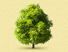

Ландшафтное проектирование Ландшафтное проектирование |
 Озеленение Озеленение |
 Водоемы Водоемы |
 Малые архитектурные формы Малые архитектурные формы |
 Стилевые сады Стилевые сады |
| Посадка крупномеров |  Зимние сады Зимние сады |
 Вертикальное озеленение Вертикальное озеленение |
 Инженерные системы Инженерные системы |
 Обслуживание садов Обслуживание садов |
Инженерные системы
Для того чтобы даже в самое засушливое лето растения и газон в Вашем саду не засохли, необходимо предусмотреть систему полива. На рынке представлено богатое разнообразие различных систем от полностью автоматических до ручных, но любая из них состоит из подземной сети шлангов из морозоустойчивого пластика. Она может дополняться различными распылителями, клапанами, фильтрами, таймерами, влагомерами, насосами и прочими устройствами по Вашему желанию. При проектировании ландшафта система полива разрабатывается отдельно с учётом будущих растений, пожеланий заказчика и его возможностей.
 Примеры работ
Примеры работДругой важной частью дизайна участка является ландшафтное освещение. В ландшафтном освещении используется несколько эффектов, способных преобразить сад.
Система освещения может изменить сад до неузнаваемости, придать ему новые формы, добавить новые краски и просто поможет сориентироваться на участке в тёмное время суток.

Затенение. При помощи осветительного оборудования создаётся тень от одного или нескольких объектов. Регулируя высоту и удалённость светильников, можно получить непередаваемый эффект.
Пересекающийся свет. При пересечении лучей от нескольких источников света получается очень приятный эффект: общая композиция смягчается, а освещённый объект выходит на первый план.
Подсветка снизу. Также помогает создать игру света и тени, а также может повысить безопасность на участке — осветить проёмы или входы.
Подсветка сверху. Этот вид подсветки раскрасит Ваш участок новыми красками и заставит его заиграть совершенно по-новому.
Лунный свет. Очень романтичный эффект, позволяющий создать непередаваемую атмосферу в саду.
Пошаговая подсветка. Светящиеся дорожки будут манить Ваших гостей пройтись по ним, а также помогут улучшить видимость тропинки.
Подсветка воды. Один из самых первых, но по-прежнему популярный вид освещения при ландшафтном проектировании. Если на Вашем участке есть бассейн, ручеёк или фонтан, то вспышки света и красок заставят водоём заиграть совершенно по-новому. А отблески воды на деревьях и кустарниках добавят красоты и таинственности и всему саду в целом.
Ну и, конечно, нельзя забывать о системе дренажа. Чтобы дождевые и талые воды не застаивались на участке, необходимо установить дренажную систему, устройства системы водоотвода, колодцы. Компания Oridis Design готова предложить Вам полный перечень услуг по оценке водного потенциала участка и созданию дренажной системы. Все работы выполняются специалистами, имеющими большой опыт и пользующимися самыми современными методиками ландшафтного проектирования.
 Цены на услуги и материалы
Цены на услуги и материалы{kind=link}
{kind=link}
{kind=link}
{kind=link}
{kind=link}
{kind=link}
{kind=link}
{kind=link}
{kind=link}
{kind=link}